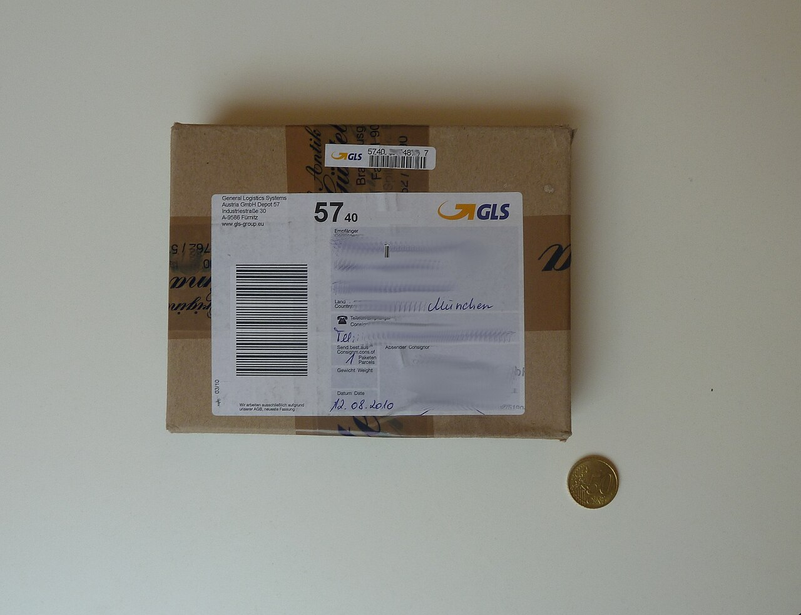

CAPTURE LOOP / LIVE FIELD TRIAL
A LABEL.
A CLEAR
NEXT STEP.
A blurry or cropped label starts a better-photo request.
A clear view opens a field you can check.
Watch the 101-second walkthrough ↗
Free, limited-capacity trial through October 14, 2026, 12:00 UTC · Your own session · 6 capture attempts

The live station measures this photo, opens the perspective view, and lets you enter the value you read.
Photo: Klaus Mueller / Wikimedia Commons · CC BY-SA 3.0 · Official 1280 px thumbnail- 01 / VISION
Measure the original.
OpenCV 5 on AWS Lambda finds the page boundary, tests focus, and prepares an available perspective view.
- 02 / AGENT
Choose the next action.
The model calls the image tool, reads its measurements, and executes a recapture request or a field-review task.
- 03 / REVIEW
Keep the evidence.
Compare the original and derived view. Record the field yourself, then export the capture trail and tool calls.
OPEN IT ON YOUR PHONE
Two samples.
One useful question.
Start with Load GLS parcel and compare its date. Try Load cropped label to see a request for a complete view. The photos show separate parcels.
For your own picture, use one flat page or label against a contrasting surface. Choose a photo cleared for this trial.
Your trial workspace
A session cookie keeps your photos and review in your own workspace. The live server deletes its session files after 24 hours; you can delete them earlier from the station.
Photos go to the private AWS image tool. The model receives numerical observations and the preceding capture request. The station explains the complete data path before upload.
Inspect the recorded AWS + model run ↗
Recorded examples use selected licensed photos and scripted field reviews. The field trial gathers fresh phone, lighting and usability feedback.
HELP SHAPE THE CAPTURE STATION